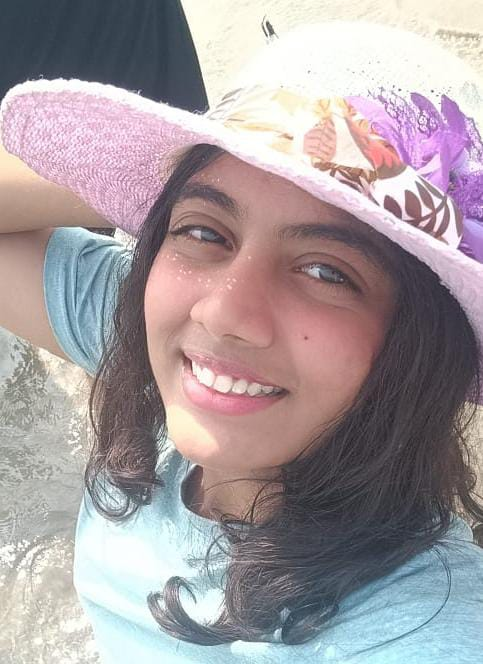

Connect with me
ABOUT ME
Bringing Coding and Creativity together
Motivated and dedicated first-year B.Tech Computer Science student with a good foundation in programming, problem-solving Eager to apply theoretical knowledge to real-world projects and continuously develop technical and analytical skills. Enthusiastic about exploring emerging technologies, building impactful projects, and contributing to collaborative environments. Committed to academic excellence and personal growth, with a focus on becoming a versatile and skilled professional.
EDUCATION
- 2024 - Symbosis Skills and Professional University
- First-year student
- Specialization in Cybersecurity
- 2022-2024 - Aditya English Medium School
- Maharashtra Board of Secondary and Higher Secondary Education
- XII Grade: 72.33%
- 2018-2021 - Blue Ridge Public School
- Primary and Secondary Education
- Indian Certificate of Secondary Education
- X Grade: 89.9%
Certifications
- Completed the one-week training program on “Cloud Security: Emerging threats and cyber threat intelligence.” - 2024
- NPTEL certification of Computer Organization and Architecture - 2024
- Python for Cybersecurity Professionals - Cybrary - 2025
Awards/Activities
- Achievements in sports:
- Played state-level for Handball (2015)
- Played state-level for RollBall (2019)